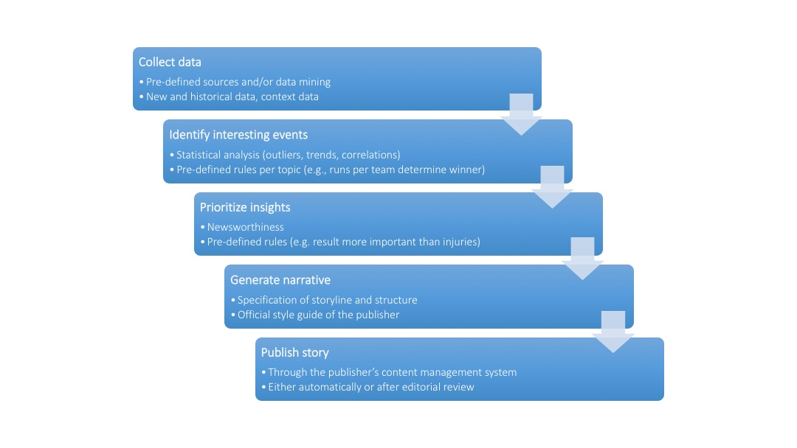

This work was funded by the Tow Foundation and the John S. and James L. Knight Foundation. Thanks to interviewees Saim Alkan, Reginald Chua, Lou Ferrara, Tom Kent, and James Kotecki. Thanks also to Peter Brown, Arjen van Dalen, Nick Diakopoulos, Konstantin Dörr, Mario Haim, Noam Lemelshtrich Latar, and Claire Wardle for providing comments and suggestions.
JanuaryFebruaryMarchAprilMayJuneJulyAugustSeptemberOctoberNovemberDecember
In recent years, the use of algorithms to automatically generate news from structured data has shaken up the journalism industry—most especially since the Associated Press, one of the world’s largest and most well-established news organizations, has started to automate the production of its quarterly corporate earnings reports. Once developed, not only can algorithms create thousands of news stories for a particular topic, they also do it more quickly, cheaply, and potentially with fewer errors than any human journalist. Unsurprisingly, then, this development has fueled journalists’ fears that automated content production will eventually eliminate newsroom jobs, while at the same time scholars and practitioners see the technology’s potential to improve news quality. This guide summarizes recent research on the topic and thereby provides an overview of the current state of automated journalism, discusses key questions and potential implications of its adoption, and suggests avenues for future research. Some of the key points can be summarized as follows.
Companies worldwide are developing software solutions for generating automated news.
Leading media companies such as the Associated Press, Forbes, The New York Times, Los Angeles Times, and ProPublica have started to automate news content.
Although the technology is still in an early market phase, automated journalism has arrived in newsrooms and is likely here to stay.
Automated journalism is most useful in generating routine news stories for repetitive topics for which clean, accurate, and structured data are available.
Automated journalism cannot be used to cover topics for which no structured data are available and is challenging when data quality is poor.
The key drivers of automated journalism are an ever-increasing availability of structured data, as well as news organizations’ aim to both cut costs and increase the quantity of news.
Algorithms are able to generate news faster, at a larger scale, and potentially with fewer errors than human journalists.
Algorithms can use the same data to tell stories in multiple languages and from different angles, thus personalizing them to an individual reader’s preferences.
Algorithms have the potential to generate news on demand by creating stories in response to users’ questions about the data.
Algorithms rely on data and assumptions, both of which are subject to biases and errors. As a result, algorithms could produce outcomes that were unexpected, unintended, and contain errors.
Algorithms cannot ask questions, explain new phenomena, or establish causality and are thus limited in their ability to observe society and to fulfill journalistic tasks, such as orientation and public opinion formation.
The writing quality of automated news is inferior to human writing but likely to improve, especially as natural language generation technology advances.
Human and automated journalism will likely become closely integrated and form a “man-machine marriage.”
Journalists are best advised to develop skills that algorithms cannot perform, such as in-depth analysis, interviewing, and investigative reporting.
Automated journalism will likely replace journalists who merely cover routine topics, but will also generate new jobs within the development of news-generating algorithms.
People rate automated news as more credible than human-written news but do not particularly enjoy reading automated content.
Automated news is currently most suited for topics where providing facts in a quick and efficient way is more important than sophisticated narration, or where news did not exist previously and consumers thus have low expectations regarding the quality of the writing.
Little is known about news consumers’ demand for algorithmic transparency, such as whether they need (or want) to understand how algorithms work.
Since algorithms cannot be held accountable for errors, liability for automated content will rest with a natural person (e.g., the journalist or the publisher).
Algorithmic transparency and accountability will become critical when errors occur, in particular when covering controversial topics and/or personalizing news.
Apart from basic guidelines that news organizations should follow when automatically generating news, little is known about which information should be made transparent regarding how the algorithms work.
Automated journalism will substantially increase the amount of available news, which will further increase people’s burden to find content that is most relevant to them.
An increase in automated—and, in particular, personalized—news is likely to reemphasize concerns about potential fragmentation of public opinion.
Little is known about potential implications for democracy if algorithms are to take over part of journalism’s role as a watchdog for government.
Consider the following earnings report, which the Associated Press published shortly after Apple released its quarterly figures in January 2015.
Apple tops Street 1Q forecasts
Apple posts 1Q profit, results beat Wall Street forecasts
AP. January 27, 2015 4:39 PM
CUPERTINO, Calif. (AP) _ Apple Inc. (AAPL) on Tuesday reported fiscal first-quarter net income of $18.02 billion. The Cupertino, California-based company said it had profit of $3.06 per share. The results surpassed Wall Street expectations. The average estimate of analysts surveyed by Zacks Investment Research was for earnings of $2.60 per share. The maker of iPhones, iPads and other products posted revenue of $74.6 billion in the period, also exceeding Street forecasts. Analysts expected $67.38 billion, according to Zacks. For the current quarter ending in March, Apple said it expects revenue in the range of $52 billion to $55 billion. Analysts surveyed by Zacks had expected revenue of $53.65 billion. Apple shares have declined 1 percent since the beginning of the year, while the Standard & Poor’s 500 index has declined slightly more than 1 percent. In the final minutes of trading on Tuesday, shares hit $109.14, an increase of 39 percent in the last 12 months.
_____
> This story was generated by Automated Insights > (http://automatedinsights.com/ap) using data from Zacks Investment > Research. Access a Zacks stock report on AAPL at > http://www.zacks.com/ap/AAPL.
At first glance, the article may appear to be a routine, financial news report. Except for the footnote, which states that the story was generated by software or, more precisely, an algorithm. Granted, the piece may sound a bit technical and boring, but it provides all the facts a journalist is likely to cover and in which an investor is likely to be interested.
This technological innovation, known as automated journalism, is a relatively new phenomenon in the area of computational journalism. Automated journalism refers to the process of using software or algorithms to automatically generate news stories without human intervention—after the initial programming of the algorithm, of course. Thus, once the algorithm is developed, it allows for automating each step of the news production process, from the collection and analysis of data, to the actual creation and publication of news. Automated journalism—also referred to as algorithmic[@doerr15] or, somewhat misleadingly, robot journalism[@oremus15]—works for fact-based stories for which clean, structured, and reliable data are available. In such situations, algorithms can create content on a large scale, personalizing it to the needs of an individual reader, quicker, cheaper, and potentially with fewer errors than any human journalist.
While computation has long assisted journalists in different phases of the news production process—as in the collection, organization, and analysis of data, as well as the communication and dissemination of news—journalists have remained the authority for actually creating the news. This division of labor is changing, which, not surprisingly, has shaken up journalism in recent years. The World Editors Forum listed automated journalism as a top 2015 newsroom trend,[@ap15] and both researchers and practitioners are debating the implications of this development.[@napoli14; @diak15; @anderson13] For example, while some observers see potential for automating routine tasks to increase news quality, journalists’ fears that the technology will eventually eliminate newsroom jobs often dominates the public debate.[@dalen12; @carlson15]
In any case, opinions run strong on the use of automated journalism, which is why the technology has attracted so much attention. Popular media coverage includes NPR’s Planet Money podcast, which had one of its most experienced reporters compete with an algorithm to write a news story,[@vs15] and The New York Times’s quiz that allows readers to guess whether a human or an algorithm wrote a particular story.[@nyt15] Even The Daily Show’s humorous coverage of the topic sheds light on potentials and concerns of increased usage[@daily15].
This guide is structured as follows. Chapter 2 describes the status quo of automated journalism; Chapter 3 then discusses key questions and implications for stakeholders, such as journalists, news consumers, news organizations, and society at large; and Chapter 4 summarizes the findings and provides recommendations for future research.
The following section describes how automated journalism works; names the leading software providers; and addresses how the technology is being used in newsrooms, what its potentials and limitations are, and why it will likely become a major player in the process of news creation.
Current solutions range from simple code that extracts numbers from a database, which are then used to fill in the blanks in pre-written template stories, to more sophisticated approaches that analyze data to gain additional insight and create more compelling narratives. The latter rely on big data analytics and natural language generation technology, and emerged from the data-heavy domain of sports reporting. Both major providers of natural language generation technology in the United States, Automated Insights and Narrative Science, began by developing algorithms to automatically write recaps of sporting events. For example, Narrative Science’s first prototype, StatsMonkey, which emerged from an academic project at Northwestern University, automatically wrote recaps of baseball games.[@levy12] Baseball served as an ideal starting point due to the wealth of available data, statistics, and predictive models that are able to, for example, continuously recalculate a team’s chance of winning as a game progresses.
Figure 1 shows the basic functionality of state-of-the-art natural language generation platforms.[@reiter2000; @doerr15] First, the software collects available data, such as—in the case of baseball—box scores, minute-by-minute plays, batting averages, historical records, or player demographics. Second, algorithms employ statistical methods to identify important and interesting events in the data. Those may include unusual events, a player’s extraordinary performance, or the decisive moment for the outcome of a game. Third, the software classifies and prioritizes the identified insights by importance and, fourth, arranges the newsworthy elements by following predefined rules to generate a narrative. Finally, the story can be uploaded to the publisher’s content management system, which could publish it automatically.

Figure 1: How algorithms generate news
During this process, the software relies on a set of predefined rules that are specific to the problem at hand and which are usually derived from collaboration between engineers, journalists, and computer linguists. For example, within the domain of baseball, the software has to know that the team with the most runs—but not necessarily the most hits—wins the game. Furthermore, domain experts are necessary to define criteria of newsworthiness, according to which the algorithm looks for interesting events and ranks them by importance. Finally, computer linguists use sample texts to identify the underlying, semantic logic and translate them into a rule-based system that is capable of constructing sentences. If no such sample texts are available, trained journalists pre-write text modules and sample stories with the appropriate frames and language and adjust them to the official style guide of the publishing outlet.
A review of the market identified eleven companies that provide automated content creation for journalistic products in different countries.[@doerr15] Thereof, five are based in Germany (AX Semantics; Text-On; 2txt NLG; Retresco; Textomatic), two in the United States (Narrative Science; Automated Insights) and France (Syllabs; Labsense), and one each in the United Kingdom (Arria) and China (Tencent). The field is growing quickly: the review is not even published yet, and we can already add another provider from Russia (Yandex) to the list. While eight companies focus on providing content in one language, the remaining four offer their services in multiple languages. The German company AX Semantics, for instance, offers automated content creation in as many as twelve languages. It should be noted that these companies do not consider themselves journalistic organizations; neither do their names indicate a relationship to journalism, nor are their products specifically geared toward providing journalistic content. Rather, their technology can be applied to any data from any industry, and some of their major business fields include writing for product descriptions, portfolio analyses, or patient summaries in hospitals.
Automated news emerged almost half a century ago from the domain of weather forecasting. One early study describes a software that works similarly to the process detailed above. The software takes the outputs of weather forecasting models (e.g., wind speed, precipitation, temperature), prioritizes them by importance (e.g., whether the value is above or below a certain threshold level), and uses about eighty pre-written phrases to generate “worded weather forecasts.” Interestingly, the author’s discussion of the software’s benefits resembles much of today’s conversation about how automated journalism could potentially free up journalists and leave time for more important work (see Chapter 3): “The more routine tasks can be handled by a computer, thereby freeing the meteorologist for the more challenging roles of meteorological consultant and specialist on high-impact weather situations.”[@glahn70]
Another domain in which organizations have long used automation is financial news, where the speed in which information can be provided is the key value proposition. For example, companies such as Thomson Reuters and Bloomberg extract key figures from press releases and insert them into pre-written templates to automatically create news alerts for their clients. In this business, automation is not about freeing up time. It is a necessity. Reginald Chua, executive editor for editorial operations, data, and innovation at Thomson Reuters, told me: “You can’t compete if you don’t automate.”
In more recent years, automated journalism also found its way into newsrooms to address other types of problems, often in the form of custom-made, in-house solutions. A prominent example is the work at the Los Angeles Times on automating homicide and earthquake reporting described in case studies 1 and 2. When asked to describe the algorithms, Ken Schwencke, who developed them (and now works for The New York Times), noted that the underlying code is “embarrassingly simple,” as it merely extracts numbers from a database and composes basic news stories from pre-written text modules.[@young15] Despite—or perhaps because of—its simplicity, Schwencke’s work marks an important step in the era of automated journalism, demonstrating how simple in-house solutions can help to increase both the speed and breadth of news coverage.
Many newsrooms, however, lack the necessary resources and skills to develop automated journalism solutions in-house. Media organizations have thus started to collaborate with companies that specialize in developing natural language generation technology to automatically generate stories from data for a variety of domains. In 2012, for example, Forbes.com announced its use of Narrative Science’s Quill platform to automatically create company earnings previews.[@levy12] A year later, ProPublica used the same technology to automatically generate descriptions for each of the more than 52,000 schools for its Opportunity Gap news application.[@klein13] In 2014, automated journalism made its way into the public’s focus when the Associated Press, one of the world’s major news organizations, began automating its quarterly company earnings reports using Automated Insights’ Wordsmith platform. As described in Case Study 3, the project was a success and, as a result, the AP recently announced the expansion of its automated coverage to sports.[@ap15]
Mary Lynn Young and Alfred Hermida describe the evolution of the the Los Angeles Times’s Homicide Report as an early example of automated journalism.[@young15] Before the project’s launch in January of 2007, the Times’s print edition covered only about ten percent of the nearly 1,000 annual homicides in L.A. County. Thereby, the coverage typically focused on the most newsworthy cases, which were often the most sensational ones and therefore did not provide a representative picture of what was really happening. The goal of the Homicide Report was to address this bias in the media coverage by providing comprehensive coverage of all annual homicides. The project originally started as a blog that posted basic information about each homicide, such as the victim’s race and gender or where the body was found. A few months later, an interactive map was added to visualize the information. Soon, however, it became clear that the project was too ambitious. Due to limited newsroom resources, as well as technical and data issues, it was impossible to report every homicide. The project was put on hold in November 2008. When the Homicide Report was relaunched in January 2010, it relied on structured data from the L.A. County coroner’s office, which includes information such as the date, location, time, race or ethnicity, age, jurisdiction, and neighborhood of all homicides in the area. The revised Homicide Report used these data to automatically produce short news snippets and publish them on the blog. While these news reports were simple, providing only the most rudimentary information, they accomplished the project’s original goal to cover every single homicide and were able to do so in a quick and efficient manner. As noted by Ken Schwencke, who wrote the code for automatically generating the homicide-related news, this technological innovation reduced “the load on reporters and producers and pretty much everybody in getting the information out there as fast as possible.”[@young15] Journalists at the Los Angeles Times were open-minded toward the automation process. A study of the Homicide Report found that journalists “understood the algorithm as enhancing the role of crime reporters rather than replacing them.”[@young15] That is, crime reporters used the automatically generated stories as initial leads for exploring a particular case in more detail, for example by adding information about the victim’s life and family.
A related Los Angeles Times’s project that also uses algorithms to create automated news, Mapping L.A. provides maps and information that allow readers to compare two hundred seventy-two neighborhoods in Los Angeles County with regard to demographics, crime, and schools. The platform uses data provided by the L.A. Police and County Sheriff’s Departments to automatically generate warnings if crime reports surpass certain predefined thresholds. For example, the system triggers a crime alert for a certain neighborhood if a minimum of three crimes is reported in a single week, and if the number of reported crimes in that week is significantly higher than the weekly average of the previous quarter.
In automating traditional journalistic tasks, such as data collection and analysis, as well as the actual writing and publication of news stories, there are two obvious economic benefits: increasing the speed and scale of news coverage. Advocates further argue that automated journalism could potentially improve the accuracy and objectivity of news coverage. Finally, the future of automated journalism will potentially allow for producing news on demand and writing stories geared toward the needs of the individual reader.
Automation allows for producing news in nearly real time, or at the earliest point that the underlying data are available. For example, the AP’s quarterly earnings report on Apple (see Chapter 1) was published only minutes after the company released its figures. Another example is Los Angeles Times’s Quakebot, which first broke the news about an earthquake in the Los Angeles area in 2014 (see Case Study 2).
Automation allows for expanding the quantity of news by producing stories that were previously not covered due to limited resources. For example, both the Los Angeles Times (for homicide reports; case study 1) and the Associated Press (for company earnings reports; case study 3) reported that automation increased the amount of published stories by more then ten times. Similarly, while human journalists have traditionally only covered earthquakes that exceeded a certain magnitude or left significant damage, Quakebot provides comprehensive coverage of all earthquakes detected by seismographic sensors in Southern California (case study 2). While any one of these articles may attract only a few hits in targeting a small audience, total traffic increases with positive effects on advertising revenues.
Algorithms do not get tired or distracted, and—assuming that they are programed correctly and the underlying data are accurate—they do not make simple mistakes like misspellings, calculation errors, or overlooking facts. Advocates thus argue that algorithms are less error-prone than human journalists. For example, Lou Ferrara, former vice president and managing editor for entertainment, sports, and interactive media at the Associated Press, reports that automation has decreased the rate of errors in AP’s company earning reports from about seven percent to only about one percent, mostly by eliminating typos or transposed digits. “The automated reports almost never have grammatical or misspelling errors,” he told me, “and the errors that do remain are due to mistakes in the source data.”
Yet, Googling “generated by automated insights correction” lists thousands of examples where automatically generated articles had to be corrected after their publication.[@diak15] In the vast majority of cases, the errors are rather uncritical, such as wrong information about where the company is based or when its quarter ends. Sometimes the errors are crucial, however. A prominent example is a July 2015 report about Netflix’s second-quarter earnings.[@ap15-2] This article, which was later corrected, wrongly reported that the company missed expectations and that the share price had fallen by seventy-one percent since the beginning of the year when, in fact, it had more than doubled during that period. The reason for the error was that the algorithm failed to realize that the Netflix stock underwent a seven-to-one split. This example thus demonstrates the importance of, first, foreseeing unusual events in the initial development of the algorithms and, second, being able to detect outliers and request editorial monitoring if necessary.[@leco15]
In automatically producing short news stories about earthquakes in California, the Los Angeles Times’s Quakebot demonstrates the use of sensor data for automated journalism. When the U.S. Geological Survey’s Earthquake Notification Service releases an earthquake alert, Quakebot creates a story that provides all the basic information a journalist would initially cover—including time, location, and magnitude of the earthquake—and saves it as a draft in the Los Angeles Times content management system. After a staff member has reviewed the story for potential errors, it only takes a single click to publish the story. Although the system has been in use since 2011, Quakebot first attracted national media attention in March 2013 when it was the first news outlet to break the story that a 4.4 magnitude earthquake had hit Southern California. When Ken Schwencke, who developed Quakebot, felt the earth shaking at 6:27 a.m., he went to his computer to review the automatically generated story already waiting for him in the system and published it. Three minutes later, at 6:30 a.m., the story was online at the Los Angeles Times’s “L.A. Now” blog.[@pluc14]
Quakebot is all about speed. Its goal is to get the information out as quickly as possible. However, while speed is important, so is the accuracy of the news, and achieving both goals can be difficult. For automated news, a crucial aspect of accuracy is the quality of the underlying data. This became evident in May 2015 when seismologic sensors in Northern California picked up signals from major earthquakes that happened in Japan and Alaska, which the U.S. Geological Survey (USGS) mistakenly reported as three separate earthquakes in California with magnitudes ranging from 4.8 to 5.5. Earthquakes of that magnitude would leave significant local damage. Luckily, the alarms were false. The earthquakes had never happened and nobody could feel them. Nonetheless, Quakebot published stories for each of the three false alarms. In other words, the human review process failed. The editor trusted the algorithm and published the story without making sure that the information was correct.[@mercer15]
A simple way to verify the correctness of earthquake alerts might be to look at the number of related tweets. As soon as the earth starts shaking, Twitter users who feel the earthquake publish the information on the network. When a 6.0 earthquake hit the Napa Valley in August 2014, the first tweets appeared almost immediately and beat the official USGS alerts by minutes. Thus, the number of tweets provides an independent source of data for verifying whether a reported earthquake has actually occurred. In fact, research at the USGS showed that Twitter data can be used to locate an earthquake within twenty seconds to two minutes after its origin time. This is considerably faster than the traditional method of using seismometers to measure ground motion, particularly in poorly instrumented regions of the world.[@earle11] Along with earthquake alerts, the USGS now publishes the number of tweets per minute that contain the word “earthquake” in several languages on its official Twitter account @USGSted. For the false alarms discussed above, @USGSted reported zero tweets per minute, which is not surprising since no earthquake had happened. In comparison, for the actual earthquake that did occur off Japan, @USGSted reported fifty-six tweets per minute at the time it published the earthquake alert. The Los Angeles Times editor could have looked at this information when deciding whether or not to publish the news. Or, even better, Quakebot could be updated so that its algorithm accounts for this information and automatically publishes a story if the number of tweets in a respective area is above a certain threshold.
Algorithms strictly follow predefined rules for analyzing data and converting the results into written stories. Advocates argue that automated news provides an unbiased account of facts. This argument of course assumes that the underlying data are correct and the algorithms are programmed without bias, a view that, as discussed in the next chapter, is false or too optimistic at best.[@lazer14] That said, experimental evidence available to date suggests that readers perceive automated news as more credible than human-written news (see Textbox I).
Automation allows for providing relevant information for very small audiences and in multiple languages. In the most extreme case, automation can even create news for an audience of one. For instance, Automated Insights generates personalized match day reports (a total of more than three hundred million in 2014) for each player of Yahoo Fantasy Football, a popular online game in which people can create teams of football players and compete against each other in virtual leagues. Similarly, one of Narrative Science’s core businesses is to automatically generate financial market reports for individual customers. It is easy to imagine similar applications for other areas. For example, algorithms could create recaps of a sports event that focus on the performance of a particular player that interests the reader most (e.g., grandparents interested in the performance of their grandchild). Furthermore, as shown with Automated Insights’ Fantasy Football match day reports, the algorithms could even tell the same story in a different tone depending on the reader’s needs. For example, the recap of a sporting event could be written in an enthusiastic tone for supporters of the winning team and in a sympathetic tone for supporters of the losing one.
The ability to personalize stories and analyze data from different angles also provides opportunities for generating news on demand. For example, algorithms could generate stories that answer specific questions by comparing the historical performance of different baseball players. Algorithms could also answer what-if scenarios, such as how well a portfolio would have performed if a trader had bought stock X as compared to stock Y. While algorithms for generating news on demand are currently not yet available, they will likely be the future of automated journalism. In October 2015, Automated Insights announced a new beta version of its Wordsmith platform, which enables users to upload their own data, pre-write article templates, and automatically create narratives from the data.[@kot15] The German company AX Semantics provides a similar functionality with its ATML3 programming language.
Algorithms for generating automated news follow a set of predefined rules and thus cannot innovate. Therefore, their application is limited to providing answers to clearly defined problems for which data are available. Furthermore, at least at the current stage, the quality of writing is limited.
Automated journalism requires high-quality data in structured and machine-readable formats. In other words, you need to be able to save your data in a spreadsheet. For this reason, automation works particularly well in domains such as finance, sports, or weather, where data providers make sure that the underlying date are accurate and reliable. Needless to say, automation cannot be applied to domains where no data are available. Automation is challenging in situations where data quality is poor. For example, in March 2015, the Associated Press announced that it would commence automatically producing stories on college sports events for lower divisions using game statistics data from the NCAA. The goal of this endeavor is to expand the existing sports coverage by providing stories on sports events that were previously not covered. According to Lou Ferrara, this project was more complicated than expected due to issues with the underlying data. Since the data are often entered by coaches and do not undergo strict verification procedures, they can be messy and contain errors.
Algorithms can add value by generating insights from data analysis. In applying statistical methods to identify outliers or correlations between multiple variables, algorithms could find interesting events and relationships, which in turn could lead to new stories. However, algorithms that analyze correlations cannot establish causality or add meaning. That is, while algorithms can provide accounts of what is happening, they cannot explain why things are happening.[@lazer14] As a result, findings derived from statistical analysis—regardless of their statistical significance—can be completely meaningless (see www.tylervigan.com for examples of statistically significant but completely spurious correlations). Humans still need to validate the findings by applying logic and reasoning.[@latar15]
Once the findings have been validated, algorithms can contribute knowledge. Yet, this contribution is limited to providing answers to prewritten questions by analyzing given data. Algorithms cannot use the knowledge to ask new questions, detect needs, recognize threats, solve problems, or provide opinions and interpretation on, for example, matters regarding social and policy change. In other words, algorithms lack ingenuity and cannot innovate. As a result, automated journalism is limited in its ability to observe society and fulfill journalistic tasks, such as orientation and public opinion formation.[@latar15]
Another often mentioned limitation of automated news is the quality of the writing. Current algorithms are limited in understanding and producing nuances of human language, like humor, sarcasm, and metaphors. Automated news can sound technical and boring, and experimental evidence shows that people prefer reading human-written to automated news (see Textbox I). That said, according to Gartner’s “Hype Cycle for Business Intelligence and Analytics, 2015” natural language generation is only at the very beginning of its development.[@schlegel15] Therefore, the technology, and thus the quality of writing, is likely to further improve over time. It remains an open question, however, whether algorithms will ever be able to produce sophisticated narration comparable to human writing.[@latar15]
In July 2014, the Associated Press began to automate the process of generating corporate earnings stories using the Wordsmith platform for natural language generation, developed by Automated Insights with data provided by Zacks Investment Research (for an example, see the Apple quarterly earnings report shown in Chapter 1). The project turned into a massive success. In January 2015, AP announced that the automation allowed for the generation of more than 3,000 stories per quarter, compared to about three hundred stories that AP reporters and editors previously created manually. By the end of 2015, the AP expects to generate 4,700 stories, and soon it will also generate earnings reports for companies in Canada and the European Union. According to AP assistant business editor Philana Patterson, the reaction from both AP members and readers has been “incredibly positive.”[@white15] First, readers are happy because they have access to more stories, which also contain fewer errors than the manually written ones. Second, staff members are pleased because “everybody hated doing earnings reports” and, more importantly, “automation has freed up valuable reporting time for more interesting tasks,” said Lou Ferrara. Patterson also revealed that, in addition to increasing the number of corporate earning reports by more than ten times, automation has freed up about twenty percent of the time previously spent producing earnings reports. According to AP, the freed resources have not led to any job losses but have been used to improve activities in other areas, like AP’s breaking news operations or investigative and explanatory journalism.[@white15]
The AP was not the first major news organization to use natural language generation for writing company earnings stories. Since 2012, http://www.forbes.com/ has been cooperating with Narrative Science to automatically create company earnings previews. The goal of this project was to provide cost-effective, broad, and deep market coverage for its readers. Similar to the experience at the AP, Forbes’s automating has allowed for generating more stories while freeing up resources. As a result of the additional coverage, Forbes’s audience has broadened, and site traffic and advertising revenues have increased.[@ns13]
The number of media organizations that automated journalism providers currently report as customers is small. Few providers offer actual journalistic products, and most products available to date are limited to routine topics, such as sports and finance, for which reliable and structured data are available. Automated journalism is thus still in an experimental or, at best, early-market expansion phase.[@doerr15]
This may change quickly, however. Apart from ongoing advances in computing power, big data analytics, and natural language generation technology, the most important driver of automated journalism is the ever-increasing availability of structured and machine-readable data provided by organizations, sensors, or the general public. First, in an attempt to make government more transparent and accountable, many countries are launching open data initiatives to make data publicly available. Second, our world is increasingly equipped with sensors that automatically generate and collect data. Currently, sensors constantly track changes in an environment’s temperature, seismological activity, or air pollution. Sensors are also increasingly used to provide fine-grained data on real world events. The NFL now uses sensors to track each player’s field position, speed, distance traveled, acceleration, and even the direction he is facing—which provides many new opportunities for data-driven reporting. Third, users are generating an increasing amount of data on social networks or among parents at local youth sporting events.
Furthermore, automated journalism fits into the broader trend within news organizations to commercialize journalism and follow business logics. In light of declining profits and readers’ increasing demand for content, news organizations are constantly looking for new revenue and production models that help cut costs by automating routine tasks and, at the same time, increase the quantity of news. Due to its ability to produce low-cost content in large quantities in virtually no time, automated journalism appears to some researchers as yet another strategy for news organizations to lower production costs and increase profit margins.[@cohen15]
Given these drivers, it is not surprising that advocates of automated journalism expect the field to expand quickly. Saim Alkan, CEO of the German software provider AX Semantics, estimates that already today algorithms would be capable of producing about half of the content of a regular daily newspaper. Alexander Siebert, founder of Retresco, another German company, thinks that within five years automated news will be indistinguishable from human-written news.[@sie14] And Kristian Hammond, co-founder of Narrative Science, predicts that within the next ten years more than ninety percent of news will be automated.[@levy12]
These claims are certainly debatable, in particular as they come from people with a vested interest in the success of automated journalism. However, with renowned news organizations such as the Associated Press spearheading the movement toward automated news production, it is likely that others will follow suit. Lou Ferrara predicts that “every media outlet will be under pressure to automate” and, eventually, “everything that can be automated will be automated.” Similarly, Tom Kent, AP’s standards editor, expects an “explosion of automated journalism.”
In fact, there are indications that more and more media companies are already heading in this direction. Most providers of automated journalism solutions are in constant negotiations with media organizations interested in their products. Narrative Science and AX Semantics declined to provide information about journalistic clients, as non-disclosure agreements prevent them from revealing existing collaborations.[@doerr15] Still, automated journalism might already be more common than is publicly known.
Automated journalism is likely to affect the evolution of news writing in the years to come. As shown in Figure 2, the increasing availability of automated news will impact journalism and the general public at both the individual (micro) and organizational (macro) level. This section discusses potential benefits and risks that arise from the increasing spread of automated journalism.
Since automated journalism is often perceived as a threat to the livelihood of classic journalism, it is not surprising that it has attracted a lot of attention from journalists. In particular, journalists have focused on the question of how the technology will alter their own roles and required skillsets. Two studies analyzing the content of news articles and blog posts about automated journalism provide insight into journalists’ expectations. The first study analyzed sixty-eight articles published in 2010, which covered Statsheet (the predecessor of Automated Insights), a service that automatically created match reports and previews of all three hundred forty-five NCAA Division 1 college basketball teams.[@dalen12] The second study analyzed sixty-three articles that reported on Narrative Science’s technology and discussed its impact on journalism.[@carlson15] The articles were published from 2010 to early 2014 and thus cover a longer and more recent period of journalists’ exposure to automated news.
Figure 2: Effects of automated journalism
Both studies found that journalists expected automation to change the way they work, although the extent to which automation technology will replace or complement human journalists will depend on the task and the skills of the journalist. For routine and repetitive tasks, such as sports recaps or company earnings reports—merely a conversion of raw data into standard writing—there was a consensus among journalists that they will not be able to compete with the speed and scale of automated content. Their reaction to this development usually fit either an optimistic or pessimistic frame.
According to the optimistic “machine liberates man” frame, the ability to automate routine tasks may offer opportunities to improve journalistic quality. The argument is that automation frees up journalists from routine tasks and thus allows them to spend more time on providing in-depth analysis, commentary, and investigative work, which are in turn skills that will become more important. This appears to be the case at the Associated Press, which reports that the resources freed up as a result of automation have been used to improve reporting in other areas (see Case Study 3).
According to the pessimistic “machine versus man” frame, automated journalism competes with human journalists. That is, automated journalism is portrayed as yet another way to cut costs and replace those journalists who merely cover routine tasks with software. Indeed, if an increasing share of news will eventually be automated, the logical consequence is that journalists who used to cover such content will need to either produce a better product or focus on tasks and skills for which humans outperform algorithms. As Reginald Chua told me, “journalists have to ask themselves what they bring to the table.”
In their coverage of automated journalism, journalists commonly judged the writing quality of automated content as poor or, at best, “good enough.” They further emphasized humans’ ability to write sophisticated narratives as their own competitive advantage. Yet, although human writing is certainly superior to automated content, at least to date, this debate is somewhat misleading. For one, storytelling is not among the most important skills that journalists commonly mention when defining their profession; those mentioned instead are factors where algorithms excel, such as objectivity, simplification, and speed.[@wei12] More importantly, the argument overlooks the fact that automated news is most useful in repetitive, routine, and fact-based stories for which the quality of the writing might not be that essential. For example, when seeking financial news, readers are most interested in quickly obtaining information. In such situations, complex and sophisticated writing may even be counterproductive, making the information harder to understand. This is, of course, the reason why much of the existing financial news writing is rather routine in its following of predefined templates and is thus difficult to distinguish from automated news (see Textbox I).
Rather, journalists are best advised to focus on tasks that algorithms cannot perform. In the future, human and automated journalism will likely become closely integrated and form a relationship that Reginald Chua refers to as a “man-machine marriage.” According to this view, algorithms will analyze data, find interesting stories, and provide a first draft, which journalists will then enrich with more in-depth analyses, interviews with key people, and behind-the-scenes reporting. An early example can be found in crime reporting by the Los Angeles Times’s Homicide Report (Case Study 1), in which an algorithm provides basic facts, such as the date, location, time, age, gender, race, and jurisdiction of a homicide. Then, in the second step, journalists can pick the most interesting stories and add a human touch by providing details about the victim’s life and family.[@young15]
Journalists will also take over new roles within the process of automating news production. For example, the Associated Press recently hired a so-called automation editor, whose job is to identify internal processes that can be automated. When it comes to developing news-generating algorithms, a major challenge is defining the rules and criteria that an algorithm is to follow when creating a story from data. While a sports journalist may know from experience which moments in a particular baseball game are game-changing, it can be difficult to translate this knowledge into a rule-based system that can apply to all baseball games. This task requires analytic thinking, creativity, and a certain understanding of statistics. Similarly, so-called meta-writers are required to train the algorithms by defining which words to use for describing a particular event (e.g., when a lead is large or small) or determining the story’s general structure (e.g., the headline informs who won the game, the first paragraph summarizes the score and key events, the rest of the article provides details, etc.).
Advocates of automated journalism argue that the technology benefits news consumers by providing new content that was previously unavailable and personalizes that content to meet the needs of the individual consumer. This raises two important questions. First, how do news consumers perceive the quality of automated news? Second, what are news consumers’ requirements regarding algorithmic transparency?
As noted in the previous section, journalists commonly judge the quality of automated content as poor or just “good enough” to meet minimum expectations around clarity and accuracy of the provided information. A key criticism of automated content is that it often lacks in sophisticated narration and sounds rather boring and technical. Experimental research from three countries, namely Germany, Sweden, and the Netherlands, suggests that consumer perceptions of the quality of automated news are similar to journalists’ judgments. In these studies, participants were asked to read articles written by either a human or an algorithm and rate them according to various aspects of quality.[@clerwall15; @kaa14; @graefe15] Despite using varied experimental designs and measures, the studies’ main findings were similar (for details see Textbox I). First, human-written news tended to earn better ratings than automated news in terms of readability. Second, automated news rated better than human-written news in terms of credibility. Third, and perhaps most important, differences in the perceived quality of human-written and automated news were rather small.
Textbox I: Evidence on the Perceived Quality of Automated News
In the first study of its kind, Christer Clerwall from Karlstad University in Sweden analyzed how people perceive the quality of news articles if they are ignorant of the article’s source.[@clerwall15] The experimental design reflected a situation in which publishers did not byline news stories, a practice that is not uncommon for wire stories and automated news.[@ulanoff14] Clerwall presented forty-six Swedish undergraduates in media and communication studies with an article that provided a recap of an American football game. One group saw an article generated by an algorithm, and the remaining participants saw one a human journalist had written. None of the participants knew whether a human or algorithm had written the article he or she was seeing. The articles were written in English (and thus not in the participants’ first language), contained no pictures, and were approximately of the same length. Participants rated the article along various criteria that measured credibility and readability. Then, they had to guess whether the article was written by a journalist or generated by a computer. Interestingly, participants were unable to correctly identify the article’s source. Furthermore, the automated news article rated higher than the human-written one in terms of credibility but lower in terms of readability. In general, however, differences in quality ratings were small.
The results might seem surprising. Communication students, who would be expected to have a higher level of media literacy than average news consumers, were unable to distinguish between human-written and automated articles, and even perceived the latter as somewhat more credible. But what if readers are fully aware that they are reading automated news? How does this information affect their perception of the content’s quality? Two studies provide answers to that question.
The first study, which was presented at the 2014 Computation + Journalism Symposium at Columbia University’s Brown Institute, asked one hundred sixty-eight news consumers to rate one of four automated news articles in terms of journalistic expertise and trustworthiness.[@kaa14] The articles were either correctly bylined as “written by a computer” or wrongly as “written by a journalist.” They were written in the participants’ native language (Dutch), contained no pictures, and covered the domains of sports or finance (two each). Participants were asked to rate the article’s journalistic expertise and trustworthiness. The results showed that the manipulation of the byline had no effect on people’s perceptions of quality. That is, news consumers’ ratings of expertise and trustworthiness did not differ depending on whether they were told that the article was written by a human or a computer.
The second study, which was conducted in Germany and presented at the 11th Dubrovnik Media Days in October of 2015, provides further evidence.[@graefe15] This study used a larger sample of nine hundred and eighty-six participants, also varying the actual article source and its declared source. That is, instead of only using automated articles, the researchers also obtained ratings for human-written counterparts on the same topic. Participants were randomly assigned to one of four experimental groups, in which they were presented a human-written or automated article (either correctly or wrongly declared). The articles were written in the participants’ native language (German), contained no pictures, were of similar length, and from the domains of sports and finance (one each). Each participant saw two articles and rated their credibility, journalistic expertise, and readability. The results were similar to those obtained in previous studies. That is, participants’ quality ratings did not differ depending on whether an article was declared as written by a human or computer. Furthermore, automated articles were rated as more credible, and higher in terms of expertise, than the human-written articles. For readability, however, the results showed the opposite effect. Participants rated human-written news substantially higher than automated news.
When discussing potential reasons for the small differences, researchers suggested that consumers’ initial and perhaps subconscious expectations could have influenced the results in favor of automated news.[@kaa14] According to this rationale, participants may not have expected much from automated news and were thus positively surprised when their expectations were exceeded, which potentially led them to assign higher-quality ratings. In contrast, subjects may have had high expectations for human-written articles, but when the articles failed to measure up to those expectations, they assigned lower ratings. If this rationale is true, then human-written articles should have scored higher when they were wrongly declared as automated news, and vice versa. However, evidence from the German study does not support this rationale.[@graefe15] In fact, the results show the opposite effect. Human-written news was perceived less favorable when readers were told the news was generated by an algorithm. Similarly, automated news was rated more favorable when readers thought a human wrote it. The results thus support the experiences of James Kotecki, head of communications at Automated Insights, who reported that news consumers have high standards for automated content. In particular, Kotecki conjectures that “knowing the news is automated can prime readers to look for signs that a robot wrote it and therefore scrutinize it more carefully.”
A more likely reason for why news consumers perceive automated and human-written news to be of similar quality relates to the actual content of the articles. Again, the German study provides insights in this regard.[@graefe15] Although human-written articles were perceived as somewhat more readable than automated ones, people did not particularly enjoy reading either of them. These results might indicate a general dissatisfaction with news writing, at least for the topics of finance and sports, which were the focus of the study. Such topics are routine and repetitive tasks, often performed by novice journalists who need to write a large number of stories as quickly as possible. As a result, routine news writing often comes down to a simple recitation of facts and lacks sophisticated storytelling and narration. Since the algorithms that generate automated content are programmed to strictly follow such standard conventions of news writing, the logical consequence is that the resulting articles reflect these conventions and therefore do not differ much from their human-written counterparts. Furthermore, if automated news succeeds in delivering information that is relevant to the reader, it is not surprising that people rate the content as credible and trustworthy.
In conclusion, the available evidence suggests that the quality of automated news is competitive with that of human journalists for routine, repetitive tasks. However, it is important to note that these results cannot be generalized to topics that are not solely fact-based and for which journalists contribute value by providing interpretation, reasoning, and opinion. Currently, automated stories for such complex problems are not yet available. That said, as noted earlier, the quality of automated news will likely continue to improve, both in terms of readability and the ability to generate insights that go beyond the simple recitation of facts. Future studies might even find smaller differences between the relative readability of automated and human-written content. That said, such effects may not necessarily persist as readers’ initial excitement with the new technology may fade if automated news that builds on a static set of rules feels redundant, especially if dispersed at a large scale. In this case, readers may be again drawn toward fresh and creative human writing styles, generating new opportunities for journalists.
It is up to future research to track how the quality of both automated and human-written news will evolve over time. In particular, it’s worth looking at how people’s expectations toward and perceptions of such content may change, especially for controversial and critical topics that are not merely fact-based. Future studies that analyze people’s relative perception of human-written and automated news should go beyond the previous work by focusing on the why: Why is it that automated news tends to be perceived as more credible but less readable than human-written news? This, of course, requires focusing on the articles’ actual content at the sentence level and might require collaboration with linguists. Another interesting approach would be to use web analytics data to analyze actual user engagement with automated content, such as the number and duration of visits.
For critical and controversial topics, as in automated stories that use polling data to write about a candidate’s chance of winning an election, it is easy to imagine that readers or certain interest groups may question underlying facts or criticize the angle from which the story is being told. Similarly, when algorithms are used to create personalized stories at the individual reader level, people may want to know what the algorithm knows about them or how their story differs from what other users see. In such cases, readers may request detailed information about the functionality of the underlying algorithms.
Researchers and practitioners from the field discussed such questions in March 2015 at an expert workshop, Algorithmic Transparency in the Media, held at the Tow Center and organized by Tow Fellow Nicholas Diakopoulos. In a first step, the experts identified five categories of information that consumers of automated content may potentially find interest: human involvement, the underlying data, the model, the inferences made, and the algorithmic presence.[@diak15] For example, readers might want to know who is behind the automated content—what is the purpose and intent of the algorithm, including editorial goals; who created and controls the algorithm; and who is held accountable for the content? The latter may also include information about which parts of an article were written by a person or algorithm, whether the final product was reviewed by a human editor before publication, and, if so, by whom. Regarding the source data, news organizations could publish the complete raw data or, if this is not possible (e.g., due to legal reasons), provide information about the quality of the data, such as its accuracy (or underlying uncertainty), completeness, and timeliness. Furthermore, readers may want to know whether, and if so how, the data were collected, transformed, verified, and edited; whether the data are public or private; which parts of the data were used (or ignored) when generating a story; and which information about the reader was used if the story was personalized. Regarding the actual algorithms, readers may be interested in the underlying models and statistical methods that are used to identify interesting events and insights from the data, as well as the underlying news values that determine which of those make it into the final story.
These questions provide a starting point for the kind of information news organizations might potentially reveal about their algorithms and the underlying data. However, experts identified these questions, so they may not reflect what audiences actually think. In fact, there may not even be a demand for algorithmic transparency on the user side, as probably only few people are even aware of the major role that algorithms play in journalism. This, of course, may change quickly once automated news becomes more widespread, and especially when errors occur. For example, imagine a situation in which an algorithm generates a large number of erroneous stories, either due to a programming error or because it was hacked. Such an event would immediately lead to calls for algorithmic transparency.
In his summary of the workshop results, Nicholas Diakopoulos points to two areas that would be most fruitful for future research on algorithmic transparency.[@diak15] First, we need to better understand users’ demands around algorithmic transparency, as well as how the disclosed information could be used in the public interest. Second, we need to find ways for how to best disclose information without disturbing the user experience, in particular, for those who are not interested in such information. The New York Times offers an example for how to achieve the latter in its “Best and Worst Places to Grow Up,” which provides automated stories about how children’s economic future is affected by where they are raised.[@leon15] When users click on a different county, the parts of the story that change are highlighted for a short period of time.
The coverage of routine topics like sports and finance only provides a starting point. Given the obvious economic benefits in providing opportunities to cut costs and, at the same time, increase the breath of news content, more media organizations are likely to adopt automation technology. Most likely, automation will soon be applied to more challenging subjects, such as public interest journalism, by covering political and social issues. In fact, the precursors of this development can already be observed in the form of algorithms that automatically create content on Twitter.[@lokot15]
When automating content for critical problems, issues of accuracy, quality of the content, and transparency of the underlying data and procedures become more important. In a first attempt to address these questions, Tom Kent proposed “an ethical checklist for robot journalism,” which he derived from AP’s experience automating corporate earnings reports, a project that took close to one year. The checklist poses ten questions that news organizations and editors need to think about when automating content.[@kent15] These questions consider quality issues relating to the source data, the data processing, and the final output.
News organizations need to ensure that, first, they have the legal right to modify and publish the source data and, second, the data are accurate. Data provided by governments and companies are probably more reliable and less error-prone than user-generated data like scores from local youth sporting entered into a database by coaches or the players’ parents. That said, as demonstrated in the case of earthquake reporting (see Case Study 2), even government data may contain errors or false information. Data problems may also arise if the structure of the source data changes, a common problem for data scraped from websites. Thus, news organizations need to implement data management and verification procedures, which could be either performed automatically or by a human editor.
If the underlying data or the algorithms that process them contain errors, automation may quickly generate large numbers of erroneous stories, which could have disastrous consequences for a publisher’s reputation. News organizations therefore need to engage in thorough testing before initial publication of automated news. When publication starts, Kent recommends having human editors check each story before it goes live, although, as demonstrated by the Quakebot (Case Study 2), this so-called “hand break” solution is not error-free either. Once the error rate is down to an acceptable level, the publication process can be fully automated, with occasional spot checks. The latter is the approach the AP currently uses for its company earnings reports.
Regarding the final output, Kent recommends that the writing match the official style guide of the publishing organization and be capable of using varied phrasing for different stories. Furthermore, news organizations should be aware of legal and ethical issues that may arise when the text is automatically enhanced with videos or images without proper checking. For such content, publishing rights may not be available or the content may violate standards of taste. News organizations must also provide a minimum level of transparency by disclosing that the story was generated automatically, for example, by adding information about the source of the data and how the content was generated. The AP adds the following information at the end of its fully automated company earnings reports:
This story was generated by Automated Insights () using data from Zacks Investment Research. Access a Zacks stock report on ACN at .
Of course, news consumers may be unfamiliar with these companies and their technologies, and therefore unaware that the content is provided by an algorithm. It remains unclear whether readers actually understand the meaning of such bylines. Further research on how they are perceived would be useful. Also, since more and more stories are the result of collaboration between algorithms and humans, the question arises of how to properly disclose when certain parts of a story were automated. The AP currently deals with such cases by modifying the first sentence in the above statement to “Elements of this story were generated by Automated Insights.”[@ap15-3] That said, Kent noted that the discussion about how to properly byline automated news may be a temporary one. Once automated news becomes standard practice, some publishers may choose not to reveal which parts of a story were automatically generated.
Automation advocates argue that algorithms allow for an unbiased account of facts. This view, however, assumes that the underlying data are complete and correct and, more importantly, the algorithms are programmed correctly and without bias. Like any other model, algorithms for generating automated news rely on data and assumptions, both of which are subject to biases and errors.[@lazer14] First, the underlying data may be wrong, biased, or incomplete. Second, the assumptions built into the algorithms may be wrong or reflect the (conscious or unconscious) biases of those who developed or commissioned them. As a result, algorithms could produce outcomes that were unexpected and unintended, and the resulting stories could contain information that is inaccurate or simply false.[@diak15; @diak152]
In such situations, it is not enough to state that an article was generated by software, in particular when covering critical or controversial topics for which readers’ requirements of transparency and accountability may be higher. When errors occur, news organizations may come under pressure to publish the source code behind the automation. At the very least, they should be able to explain how a story was generated, rather than simply stating that “the computer did it.”[@kent15] From a legal standpoint, algorithms cannot be held accountable for errors. The liability is with a natural person, which could be the publisher or the person who made a mistake when feeding the algorithm with data.[@weeks14; @ombelet15]
While providers of automated news could—and in some cases probably should—be transparent about many details of their algorithms, there was consensus among experts at the Tow workshop on algorithmic transparency that most organizations are unlikely to voluntarily provide full transparency, especially without a clear value proposition. However, if news organizations and software developers do not fully disclose their algorithms, it remains unclear how to evaluate the quality of the algorithms and the content produced, in particular, its sensitivity to changes in the underlying data. A promising yet complex approach might be reverse engineering, which aims at decoding an algorithm’s set of rules by varying certain input parameters and assessing the effects on the outcome.[@diak152] Another important question for future research is whether, and if so to what extent, users of automated content ultimately care about transparency, in which case the provision of such information could be a competitive advantage by increasing a publisher’s credibility and legitimacy.[@diak15]
Due to its ability to create content quickly, cheaply, at large scale, and potentially personalized to the needs of individual readers, automated journalism is expected to substantially increase the amount of available news. While this development might be helpful in meeting people’s demand for information, it could also further increase people’s burden to find content that is most relevant to them. To cope with the resulting information overload, the importance of search engines and personalized news aggregators, such as Google News, are likely to increase further.
Search engine providers claim to analyze individual user data (e.g., location and historical search behavior) to provide news consumers with the content that most interests them. In doing so, different news consumers might receive different results for the same keyword searches, which would bear the risk of partial information blindness, the so-called “filter bubble” hypothesis.[@paris11] According to this idea, personalization will lead individuals to consume more and more of the same information, as algorithms provide only content that users like to read or agree with. Consequently, people would be less likely to encounter information that challenges their views or contradicts their interests, which could carry risks for the formation of public opinion in a democratic society.
The filter bubble hypothesis has become widely popular among academics, as well as the general public. Eli Pariser’s 2011 book, The Filter Bubble: How the New Personalized Web Is Changing What We Read and How We Think,[@paris11] has not only become a New York Times bestseller but has attracted more than 1,000 citations on Google Scholar through October 2015. However, despite the theory’s popularity and appeal, empirical evidence available to date does not support the existence of the filter bubble: Most studies find either no, or only very small, effects of personalization on search results.[@bak15; @flax15; @haim15; @feuz11] Of course, this may change as the amount of available content—and thus the need for personalization—increases and algorithms for personalizing content continue to improve. The study of potential effects from personalization, whether positive or negative, remains an important area of research.
More generally, a further increase and more sophisticated use of automated journalism would eventually raise broader questions that future research must address. If algorithms were employed for public interest journalism, questions will arise as to whether we can and should trust algorithms as a mechanism for providing checks and balances, identifying important issues, and establishing a common agenda for the democratic process of public opinion formation. Furthermore, future research will need to study the implications for democracy if algorithms are to take over journalism’s role as a watchdog for government.
Automated journalism currently works well in producing routine news stories for repetitive topics, for which clean, accurate, and structured data are available. In such situations, algorithms are able to generate news faster, at a larger scale, and with fewer errors than human journalists. Furthermore, algorithms can use the same data to tell stories from different angles, in multiple languages, and personalized to the needs and preferences of the individual reader. Also, software providers have started to release tools that allow users to automatically create stories from their own data.
Automated journalism cannot be used for domains where no data are available and is challenging where data quality is poor. Furthermore, algorithms derive insights from data by applying predefined rules and statistical methods (e.g., identifying outliers and correlations) but cannot explain new phenomena or establish causality. That is, while algorithms can describe what is happening, they cannot provide interpretations of why things are happening. Algorithms are thus limited in their ability to observe society and fulfill journalistic tasks such as orientation and public opinion formation.
Automation will likely change the way journalists work, although the extent to which technology will replace or complement journalists will depend on the task and skills of the journalist. In the future, human and automated journalism will likely become closely integrated and form a “man-machine marriage.” Journalists are best advised to focus on tasks that algorithms cannot perform, such as in-depth analyses, interviews with key people, and investigative reporting. While automation will probably replace journalists who merely cover routine topics, the technology is also generating new jobs within the process of developing news-generating algorithms.
The widespread adoption will ultimately depend on whether news consumers like reading the content. Evidence available to date—which is limited to topics where automation technology is already being used on a large scale (e.g., sports and finance)—shows that while people rate automated news as slightly more credible than human-written news, they do not particularly enjoy reading it since the writing is perceived as rather boring and dry (see Textbox 1). Therefore, the technology is currently most suited for topics where (a) providing facts in a quick and efficient way is more important than sophisticated narration (e.g., financial news) or (b) news did not previously exist so consumers have low expectations regarding writing quality. That said, the writing quality of automated news is likely to improve, as natural language generation technology advances further.
Other important questions for the use of automated journalism in newsrooms relate to issues of algorithmic transparency and accountability. In particular, little is known about whether news consumers (need or want to) understand how algorithms work, or about which information they use to generate content. Furthermore, apart from some basic guidelines and principles that should be followed when using automation technology, there’s little data about which information news organizations should make transparent and how their algorithms work (e.g., decision rules or underlying data). Such information may become particularly relevant in situations where (a) errors occur and (b) content is personalized to the needs and preferences of the individual news consumer. Finally, a potential increase in personalized news is likely to reemphasize prior concerns regarding filter bubbles or fragmentation of public opinion.
Automated journalism has arrived and is likely here to stay. The key drivers are an ever-increasing availability of structured data, as well as news organizations’ aim to cut costs while at the same time increasing the quantity of news. This guide summarized the status quo of automated journalism, discussed key questions and potential implications of its adoption, and pointed out avenues for future research. In particular, conducting future research into questions about how automation will change journalists’ roles and required skills, how news organizations and consumers should and will deal with issues relating to algorithmic transparency and accountability, and how a widespread use of automated and personalized content will affect public opinion formation in a democratic society would be valuable. Furthermore, that research should track how the writing quality of automated news evolves over time. In particular, it might consider how people’s expectations toward and perceptions of such content change—especially for controversial and critical topics, such as election campaign coverage, which are not merely fact-based and involve uncertainty.
For another introduction to the topic:
Celeste Lecompte, “Automation in the Newsroom: How Algorithms Are Helping Reporters Expand Coverage, Engage Audiences, and Respond to Breaking News,” NiemanReports, 69(3)(2015): 32–45, http://niemanreports.org/articles/automation-in-the-newsroom/.
If you are interested in how journalists write about automated news:
Matt Carlson, “The Robotic Reporter,” Digital Journalism, 3(3)(2015): 416–431.
For evidence on how news consumers perceive the quality of automated news:
Andreas Graefe, et al., “Perception of Automated Computer-Generated News: Credibility, Expertise, and Readability,” 2015. Paper presented at the 11th Dubrovnik Media Conference Days: Artificial Intelligence, Robots, and Media, October 30–31.
For guidelines that news organizations should follow when implementing automated journalism:
Tom Kent, “An Ethical Checklist for Robot Journalism,” 2015. Available at https://medium.com/@tjrkent/an-ethical-checklist-for-robot-journalism-1f41dcbd7be2.
For a discussion of issues regarding algorithmic transparency and accountability:
Nicholas Diakopoulos, “Accountability in Algorithmic Decision-Making: A View from Computational Journalism,” Communications of the ACM (forthcoming in 2016).
For a discussion of legal implications of automated journalism:
Lin Weeks, “Media Law and Copyright Implications of Automated Journalism,” Journal of Intellectual Property and Entertainment Law, 4(1)(2014): 67–94.
For a discussion of the technology’s potentials and limitations, and an overview of software providers:
Konstantin Nicholas Dörr, “Mapping the Field of Algorithmic Journalism,” Digital Journalism, 3 November 2015, available at http://www.tandfonline.com/doi/abs/10.1080/21670811.2015.1096748?journalCode=rdij20.
Dr. Andreas Graefe is currently a research fellow at the Tow Center for Digital Journalism at Columbia University and at the Department of Communication Science and Media Research at LMU Munich, Germany. He also holds a professorship in customer relationship management at Munich’s Macromedia University. Andreas studied economics and information science at the Universities of Regensburg and Zurich and received his Ph.D. in economics from the University of Karlsruhe. He has held research positions at the Institute for Technology Assessment and Systems Analysis at Karlsruhe Institute of Technology, as well as visiting scholar positions at the University of Pennsylvania’s Wharton School and Columbia University’s European Institute. After finishing his Ph.D., Andreas worked in the private sector as a senior manager for the German pay-tv company Sky Deutschland, where he led the CRM Resource Management Department. Andreas has studied diverse topics, such as forecasting, decision-making, automated journalism, technology assessment, public opinion, advertising, leadership, and health care. His work has been published in leading journals in various fields, such as Public Opinion Quarterly, International Journal of Forecasting, Journal of Behavioral Decision Making, Journal of Business Research, Electoral Studies, and BMC Medical Informatics and Decision Making. Andreas can be reached at graefe.andreas@gmail.com.
Konstantin Nicholas Dörr, “Mapping the Field of Algorithmic Journalism,” Dig-ital Journalism, 3 November 2015, http://dx.doi.org/10.1080/21670811.2015.1096748.
Will Oremus, “Why Robot?” Slate, 2015, http://www.slate.com/articles/technology/future_tense/2015/02/automated_insights_ap_earnings_reports_robot_journalists_a_misnomer.html.
“AP, NCAA to Grow College Sports Coverage With Automated Game Stories,”Associated Press, 4 March 2015, http://www.ap.org/Content/Press-Release/2015/AP-NCAA-to-grow-college-sports-coverage-with-automated-game-stories.
Philip M. Napoli, “Automated Media: An Institutional Theory Perspective onAlgorithmic Media Production and Consumption,” Communication Theory, no. 3 (2014):340–360; Nicholas Diakolpoulos, “Towards a Standard for Algorithmic Transparencyin the Media,” Tow Center for Digital Journalism, 27 April 2015, http://towcenter.org/towards-a-standard-for-algorithmic-transparency-in-the-media/; ChristopherW. Anderson, “Towards a Sociology of Computational and Algorithmic Journalism,”New Media & Society, no. 7 (2013): 1005–1021.
Arjen van Dalen, “The Algorithms Behind the Headlines,” Journalism Practice,nos. 5–6 (2012): 648–658; Matt Carlson, “The Robotic Reporter,” Digital Journalism,no. 3 (2015): 416–431.
Stacey Vanek Smith, “An NPR Reporter Raced a Machine to Write a News Story.Who Won?” NPR, 29 May 2015, http://www.npr.org/sections/money/2015/05/20/406484294/an-npr-reporter-raced-a-machine-to-write-a-news-story-who-won.
The New York Times, “Did a Human or a Computer Write This?” 7 March 2015,http://www.nytimes.com/interactive/2015/03/08/opinion/sunday/algorithm-human-quiz.html?smid=pl-share&_r=0.
The Daily Show, “Robot Journalists,” 2015, http://www.cc.com/video-clips/fh76l0/the-daily-show-with-trevor-noah-robot-journalists.
Steven Levy, “Can an Algorithm Write a Better News Story Than a Human Re-porter?” Wired, 24 April 2012, http://www.wired.com/2012/04/can-an-algorithm-write-a-better-news-story-than-a-human-reporter/.
Ehud Reiter and Robert Dale, Building Natural Language Generation Systems(Cambridge: Cambridge University Press, 2000); Dörr, “Mapping the Field of Algo-rithmic Journalism.”
Dörr, “Mapping the Field of Algorithmic Journalism.”
Harry R. Glahn, “Computer-Produced Worded Forecasts,” Bulletin of the Amer-ican Meteorological Society, no. 12 (1970): 1126–1131.
Alfred Hermida and Mary Lynn Young, “From Mr. and Mrs. Outlier to CentralTendencies,” Digital Journalism, no. 3 (2015): 381–397.
Levy, “Can an Algorithm Write a Better News Story Than a Human Reporter?”
Scott Klein, “How To Edit 52,000 Stories at Once,” ProPublica, 2013, https://www.propublica.org/nerds/item/how-to-edit-52000-stories-at-once.
“AP, NCAA to Grow College Sports Coverage With Automated Game Stories.”
Hermida and Young, “From Mr. and Mrs. Outlier to Central Tendencies.”
Ibid.
Ibid.
Diakolpoulos, “Towards a Standard for Algorithmic Transparency in the Media.”
“Netflix Misses Street 2Q Forecasts,” Associated Press, 15 July 2015, http://finance.yahoo.com/news/netflix-misses-street-2q-forecasts-202216117.html.
Celeste Lecompte, “Automation in the Newsroom,” Nieman Foundation, 1 Septem-ber 2015, http://niemanreports.org/articles/automation-in-the-newsroom/.
Joanna Plucinska, “How an Algorithm Helped the LAT Scoop Monday’s Quake,”Columbia Journalism Review, 18 March 2014, http://www.cjr.org/united_states_project/how_an_algorithm_helped_the_lat_scoop_mondays_quake.php.
Brandon Mercer, “Two Powerful Earthquakes Did Not Hit Northern California,Automated Quake Alerts Fail USGS, LA Times After Deep Japan Quake,” CBS SFBay Area, 30 May 2015, http://sanfrancisco.cbslocal.com/2015/05/30/4-8-and-5-5-magnitude-earthquakes-did-not-hit-northern-california-automated-quake-alerts-fail-usgs-la-times-a-2nd-and-3rd-time/.
Daniel C. Bowden, Paul S. Earle, and Michelle Guy, “Twitter Earthquake De-tection: Earthquake Monitoring in a Social World,” Annals of Geophysics, no. 6 (2011):708–715.
David Lazer et al., “The Parable of Google Flu: Traps in Big Data Analysis,”Science, no. 6176 (2014): 1203–1205.
James Kotecki, “New Data-driven Writing Platform Enables Professionals to Cre-ate Personalized Content at Unprecedented Scale,” Automated Insights, 20 October2015, http://www.prweb.com/releases/2015/10/prweb13029986.htm.
Lazer et al., “The Parable of Google Flu: Traps in Big Data Analysis.”
Noam Lemelshtrich Latar, “The Robot Journalist in the Age of Social Physics:The End of Human Journalism?” In The New World of Transitioned Media, ed. GailEinav (New York: Springer, 2015), 65–80, http://link.springer.com/chapter/10.1007/978-3-319-09009-2_6.
Ibid.
Kurt Schlegel, “Hype Cycle for Business Intelligence and Analytics, 2015,” 4 Au-gust 2015, https://www.gartner.com/doc/3106118/hype-cycle-business-intelligence-analytics.
Latar, “The Robot Journalist in the Age of Social Physics: The End of HumanJournalism?”
Erin Medigan White, “Automated Earnings Stories Multiply,” Associated Press,29 January 2015, https://blog.ap.org/announcements/automated-earnings-stories-multiply.
Ibid.
“Case Study: Forbes,” Narrative Science, 19 May 2015, http://resources.narrativescience.com/h/i/83535927-case-study-forbes.
Dörr, “Mapping the Field of Algorithmic Journalism.”
Nicole S. Cohen, “From Pink Lips to Pink Slime: Transforming Media Labor ina Digital Age,” The Communication Review, no. 2 (2015): 98–122.
Alexander Siebert, “Roboterjournalismus im Jahre 2020—Acht Thesen,” The Huff-ington Post, 8 August 2014, http://www.huffingtonpost.de/alexander-siebert/roboterjournalismus-im-jahre-2020---acht-thesen_b_5655061.html.
Levy, “Can an Algorithm Write a Better News Story Than a Human Reporter?”
Dörr, “Mapping the Field of Algorithmic Journalism.”
Dalen, “The Algorithms Behind the Headlines.”
Carlson, “The Robotic Reporter.”
Siegfried Weischenberg, Maja Malik, and Armin Scholl, “Journalism in Germanyin the 21st Century,” in The Global Journalist in the 21st Century, ed. David Weaverand Lars Willnat (New York: Routledge, 2012), 205–219.
Hermida and Young, “From Mr. and Mrs. Outlier to Central Tendencies.”
Christer Clerwall, “Enter the Robot Journalist,” Journalism Practice, no. 5 (2014):519–531; Hille van der Kaa and Emiel Krahmer, “Journalist Versus News Consumer:The Perceived Credibility of Machine Written News,” Computation Journalism Con-ference, Columbia University, New York, 2014; Andreas Graefe et al., “Readers’ Per-ception of Computer-Written News: Credibility, Expertise, and Readability,” DubrovnikMedia Days Conference, University of Dubrovnik, 2015.
Clerwall, “Enter the Robot Journalist.”
Lance Ulanoff, “Need to Write 5 Million Stories a Week? Robot Reporters to theRescue,” Mashable, 1 July 2014, http://mashable.com/2014/07/01/robot-reporters-add-data-to-the-five-ws/#jlMMJqbFtSq4.
Kaa and Krahmer, “Journalist Versus News Consumer: The Perceived Credi-bility of Machine Written News.”
Graefe et al., “Readers’ Perception of Computer-Written News: Credibility, Ex-pertise, and Readability.”
Kaa and Krahmer, “Journalist Versus News Consumer: The Perceived Credi-bility of Machine Written News.”
Graefe et al., “Readers’ Perception of Computer-Written News: Credibility, Ex-pertise, and Readability.”
Ibid.
Diakolpoulos, “Towards a Standard for Algorithmic Transparency in the Media.”
Ibid.
Gregor Aisch et al., “The Best and Worst Places to Grow Up: How Your AreaCompares,” The New York Times, 3 May 2015, http://www.nytimes.com/interactive/2015/05/03/upshot/the-best-and-worst-places-to-grow-up-how-your-area-compares.html?_r=0.
Tetyana Lokot and Nicholas Diakopoulos, “News Bots: Automating News andInformation Dissemination on Twitter,” Digital Journalism, 15 September 2013, http://dx.doi.org/10.1080/21670811.2015.1081822.
Tom Kent, “An Ethical Checklist for Robot Journalism,” Medium, 24 February2015, https://medium.com/@tjrkent/an-ethical-checklist-for-robot-journalism-1f41dcbd7be2.
David Koenig, “Exxon 3Q Profit Falls by Nearly Half Amid Low Oil Prices,” As-sociated Press, 30 October 2015, http://www.salon.com/2015/10/30/exxon_3q_profit_falls_by_nearly_half_amid_low_oil_prices/.
Lazer et al., “The Parable of Google Flu: Traps in Big Data Analysis.”
Diakolpoulos, “Towards a Standard for Algorithmic Transparency in the Media”;Nicholas Diakolpoulos, “Algorithmic Accountability: Journalistic Investigation of Com-putational Power Structures,” Digital Journalism, no. 3 (2015): 398–415.
Kent, “An Ethical Checklist for Robot Journalism.”
Lin Weeks, “Media Law and Copyright Implications of Automated Journalism,”Journal of Intellectual Property and Entertainment Law, no. 1 (2014): 67–94; Pieter-Jan Ombelet, Aleksandra Kuczerawy, and Peggy Valcke, “Supervising Automated Jour-nalists in the Newsroom: Liability for Algorithmically Produced News Stories,” DubrovnikMedia Days: Artificial Intelligence, Robots and the Media Conference, University ofDubrovnik, 2015.
Diakolpoulos, “Algorithmic Accountability: Journalistic Investigation of Com-putational Power Structures .”
Diakolpoulos, “Towards a Standard for Algorithmic Transparency in the Media.”
Eli Pariser, The Filter Bubble: What the Internet Is Hiding From You (New York:Penguin Press, 2011).
Ibid.
Lada Adamic, Eytan Bakshy, and Solomon Messing, “Exposure to Ideologically Diverse News and Opinion on Facebook,” Science, no. 6239 (2015): 1130–1132; Seth Flaxman, Sharad Goel, and Justin Rao, “Filter Bubbles, Echo Chambers, and On- line News Consumption,” 2015, https://5harad.com/papers/bubbles.pdf; Florian Arendt, Mario Haim, and Sebastian Scherr, “Abyss or Shelter? On the Relevance of Web Search Engines’ Search Results When People Google for Suicide,” Health Com- munication, 2015; Martin Feuz, Matthew Fuller, and Felix Stalder, “Personal Web Search- ing in the Age of Semantic Capitalism: Diagnosing the Mechanisms of Personalisa- tion,” First Monday, no. 2 (2011), http://firstmonday.org/ojs/index.php/fm/article/ view/3344/2766.